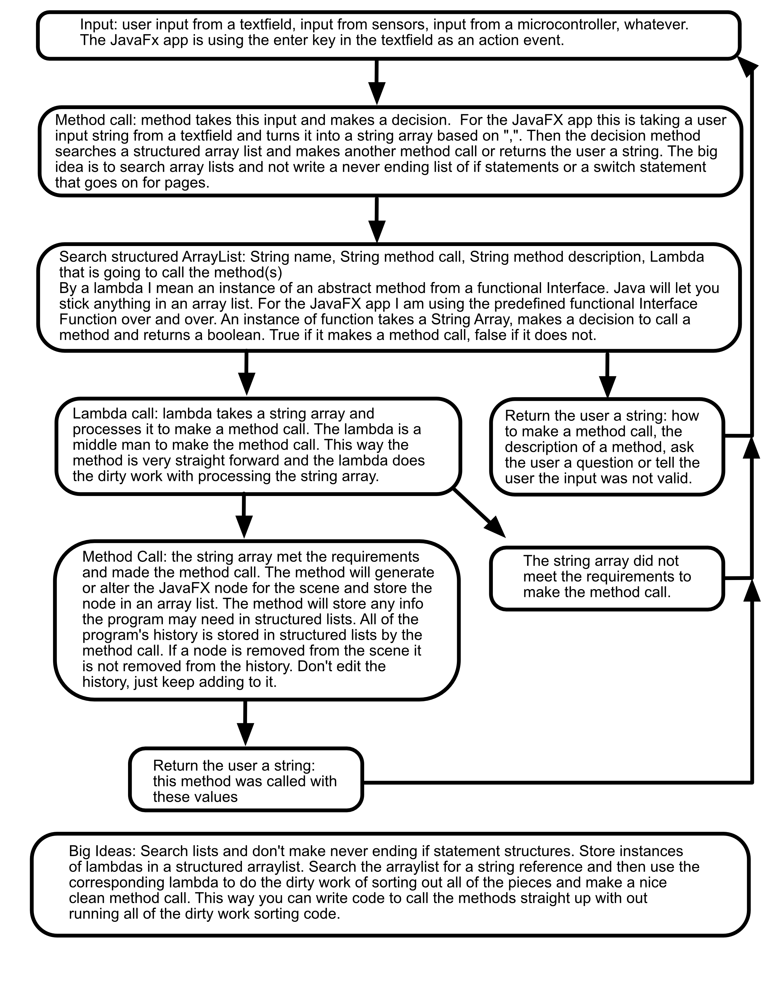
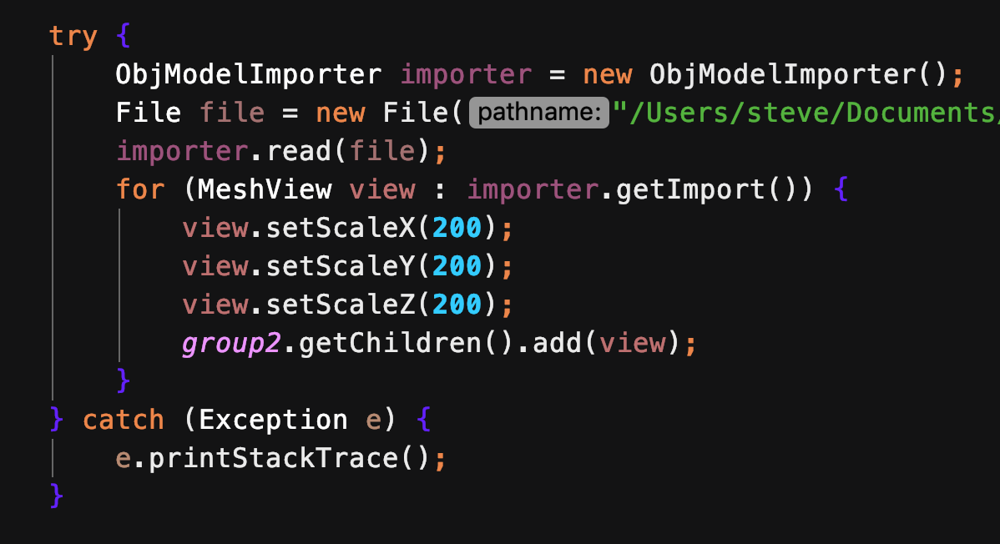

Written 10/30/19 stevegmerwin@gmail.com
I like prototyping hardware designs and building the corresponding software interfaces. I have done all kinds of fabrication work. What I am currently working on is writing software in Java to control a CNC machine. The CNC will use brushless motors and ODrive control boards. The ODrive boards are being widely used in robotic research and making it very easy to control high powered brushless motors in a low budget project. Here is an image of the hardware I have setup in order to start testing software.
Hardware just is what it is. You CAD up a design, fabricate a run of parts, and see how it all works in the real world. Everything always looks great in CAD and works in the sim. Getting it all put together and working in the real world is certainly a different beast. But the hardware works like it works and does what it does. It all boils down to the software. Software is the hard part.
Over the years I have used a lot of different CAD software. I like digging into the software design ideas and seeing what interface concepts designers came up with. SolidWorks, Inventor, OnShape, Fusion 360, Siemens NX ... All great design tree CAD products. Blender is not design tree CAD but an incredible software and there are several engineers that have written about using Blender for precision mechanical design. If your internet connection is good OnShape is awesome. For 2D CAD I have been sold on Affinity Designer for quite some time. I have used Affinity Designer to CAD countless circuit boards that I cut on a CNC router.
With all of this I have never been satisfied with the whole CNC router process to cut parts. I am referring to a 60cm x 30cm desktop CNC router. I want to up load my CAD file to the CAM software and have it do a much better job of taking care of business. I also have always found the CAD and CAM software designs to be to full of clicky menus that you have to learn your way through. I would prefer to type commands into a search engine and have the search engine chase down methods for me.
With this idea of developing a search engine style CAM software to run a brushless motor CNC machine using ODrive boards I spent a few days learning JavaFX. I wrote the Java software using the same design concepts I have used over and over again. I figured I would take some time and write about these design concepts here and maybe I could find a few good critics to help me improve the way I do things. I have been having fun with JavaFX. I have been able to make progress quickly and I am quite impressed with how well JavaFX is put together. I have had more blocks of code run on a first attempt than with any other project. So far I am thinking JavaFX could be a great solution to build impressive GUI apps very quickly. Here is a flowchart image of the design structure I am using.

Here is a link to the Main class in the JavaFX app. Main class There are two JavaFX groups in the Scene. One group is the background and the other group holds the nodes and handles the mouse action events to rotate, scroll and drag. There are two textfields on the background group: one for user input and one for search engine feedback. The background group also holds a running object list. Here is a screenshot of the Java app running with a few shape nodes.
At the bottom of Main I run a couple of threads and do a memory usage calculation. I do this in python and C++ and when using microcontrollers and so on. I will take it out of a final run but when your developing it is nice to make certain nothing weird is going on and the memory usage is as expected. It is also a good way to see how expensive it is to make a new thread. Here is a screenshot of the memory usage.
The two big things happening in Main are that the eventhandler on the textfield calls the decision function and the main method calls the makeRunAll method which builds the arraylist that the decision method searches through. All of the code you want to execute in the main method has to be before the JavaFX launch call.
The rest of the action happens in the Funct class. Here is a link to the Funct class. Funct class
There is a Drag class and a GroupGestures class. Drag class GroupGestures class That is just how I structured panning the group that is holding the nodes with a right click. There is probably a cleaner way to write the mouse events. There may be mouse events prebuilt in the JavaFXtras library that would be a cleaner implementation. I have not gotten that far yet. The rotation and scroll mouse events are in the Main Class. Yeah, this is messy. The mouse events are not that interesting to build.
The cool stuff is in the Funct class. It makes the app easy to expand. Just keep adding more lambdas and methods. Add the lambdas to the arraylist that the decision method searches and your rockin. The last method I built loads an FXML file to the group on the fly via the command window. So you can load and remove FXML files from the scene via the textfield while the app is running. It does not take long to add and edit lambdas. So you can just keep adding functionality to the scene. In the Funct class there is an array list called run with no type specification. The main method runs the makeRunAll method and fills the run array up. Now the decision method can search run when the textfield sets off the event handler on the enter key. The decision method takes the string and breaks it into an array based on ",". If decision finds a match in run then is calls the corresponding lambda which is also living in run and feeds the lambda the string array. If the lambda likes the string array it will call up a method to work with nodes. If the lambda does not like the string array the user will be fed that info in the textfield on the scene. The idea is to keep adding methods and lambdas and keep making the search process more sophisticated.
I think with this structure we can do a lot with JavaFX fairly easy. I like the text command search. There is a JavaFXtras library and a JavaFXyz library that I have not gotten into yet. The group the nodes are being added to needs a method for an STL and an OBJ export. What I am interested in doing is being able to import a CAD file for a part to be cut on a CNC machine and then run the CNC simulation in JavaFX. I am also going to run the ODrive board from a serial IO from Java and see how that goes. After two days of playing around with JavaFX it seems to have a lot of potential. There is also a JavaFX SceneBuilder that I have not tried yet. I like to spend some time designing and coding before I just jump to use someone else's work. I didn't use Java for quite a while and now getting back into it is such a pleasure. Java is just super flexible and I like the breakup of compile time errors vs. runtime errors. I really like the predefined functional interfaces and the lambda expression that came with Java 8. It was just a massive improvement to the language. It is sweet to be able to just call up the predefined functional interfaces and bag lambda expressions up in arrays and then we can search for them and call them out. And the coding to do this is so minimal. Having predefined code blocks is a really clean feature and makes the code so much more readable.
11/2/19
I added color2D and color3D and scale2D and scale3D to the method calls this morning. Funct class

11/4/19
Nov 04, 2019 7:24:51 PM javafx.scene.shape.TriangleMesh validateFaces WARNING: The values in the faces array must be within the range of the number of vertices in the points array (0 to points.length / 3 - 1) for the point indices and within the range of the number of the vertices in the texCoords array (0 to texCoords.length / 2 - 1) for the texture coordinate indices.
Here is a screenshot.
11/5/19

I put the JavaFXyz and the JavaFXtras jars in my JavaFX folder. I am using IntellJ and just have IntellJ pointing the compiler to the JavaFX folder. It makes things easy b/c I just drag the jars into that folder and rebuild the project and it all takes a couple of seconds. I put the entire dependencies folder I am using in Google Drive. It's getting kinda big for GitHub. The notes for the VM are in there as well and the current project folder. JavaFXyz has a link to the jars right on the github page. Sometimes building from source turns into a time void. So in IntellJ go to files -> project structure and then add the lib folder to the libraries and the legal folder to modules. Then run -> edit configurations and add the notes to the VM. Rebuild the project and see if it comes up clean.
11/7/19
I setup basic 2D plotting in a new group. When the user calls graphaxes it puts the axes on the graph and a white background. Then a function called linepow plots the format: $$a*x^b+c$$ I don't feel like rebuilding numpy but it is easy to add functionality to the graph. I built a point function to plot points. A user could really customize this fairly easy to do area fills and print calculations and build whatever for custom functions. I played around with the built in line graph but it is not as flexible as building it on a group. Here is a screenshot of the additional group with a pair of plots. So the group can be moved and scaled with method calls. I need to add a clear graph method.
11/8/19
I got the STL viewer working in my code this morning. I am happy with is one. Here is a screenshot.
I added the jar files from InteractiveMesh.org to my JavaFX folder and rebuilt the project, no problem. Here is the method I am running.
Here is a link the the entire function java file. Funct class
I build an STL move function. So the STL files can be moved and imported. This is versatile in JavaFX b/c we can import onto different groups and add events to those groups. The STL imports as a javafx.scene.shape so it is game on with all of the basic method calls: move, scale, rotate, .... Now I want to see how many files types I can import and then start working on exporting. For the CNC software I am not interested in editing these files. I do want to be able to import a wide range of file types and export to STL and OBJ. I am going to try working with the rest of the jars from InteractiveMesh.org and see how they work.
11/10/19
I got the Obj file importer from InteractiveMesh.org working this morning and was able to load JPG's and PNG's onto the JavaFX scene using the JavaFX native Image class. I played around with URL's for a while making input streams from files with http extensions. For these imports I am just using local files so I used the Java File class. I totally could have used the URL class just the same. Here is a screenshot of an Obj file loaded onto the JavaFX group.
The STL files just load straight up. The Obj file needs to be in a folder with the associated .mtl file. My solution was to upload the file into Blender and then let Blender export it. When Blender exports and obj file it generates a folder with several small files; one being an mtl. If you try to load the obj file straight up, the InteractiveMesh loader kicks out an error that it did not find the mtl file. Other than that, the InteractiveMesh obj file loader is working as expected. I tried the obj file loader from the FXyz jar w/o success. It keeps throwing a file not found error. I can stream the file into the terminal with a loop of string prints. The other loaders find the files but the FXyz loader throws an error. So I have code working for importing STL's and OBJ's with the InteractiveMesh jar's. InteractiveMesh had other loaders for file types I have not used so I was not too worried about those. Here is a screenshot of the loader code and the obj file folder with the mtl files from blender.

The JavaFX native Image class is loading jpeg's and png's onto the JavaFX group no problem. Here is a screenshot of a circuit board image as a jpg loaded onto a JavaFX group and the code to load the jpg.
Now I have a bunch of java code to build to get these importers working as method calls in my JavaFX app. Since I am using local files I am going to build a method to import the file strings into an array. Then the user just uses "file, 1" in their import method call and there is no more messing with the address string. Later on I could build a URL method and use it for local files and web resources. This could be done much nicer where you feed an image folder address to a method that loads all of the file address strings into a File array and then the users calls them out into the method calls. For now I am just going to feed file address strings into an array with method calls from the app. I am going to have to write the code to have Java save all of the arrays so the app has a save option. Probably a good thing to figure out now before I continue with the current design structure any further. So save all of the arrays to a file and then call everything back to the scene when the file is opened.